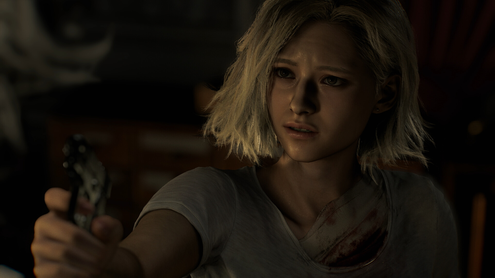
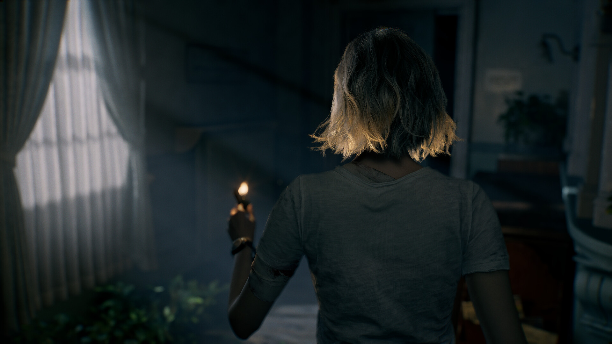
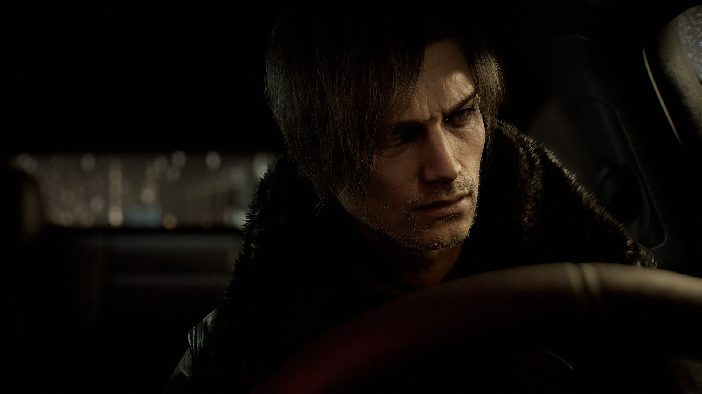

La cámara también cuenta la historia
Resident Evil Requiem pone a Grace en primera persona y a Leon en tercera, y te deja cambiar cuando quieras. Esa decisión de diseño dice más sobre sus protagonistas que muchos de sus diálogos.

Cuando jugué Resident Evil Requiem, lo primero que me llamó la atención no fue un monstruo ni un giro del guion, sino un menú. En las opciones hay un ajuste que permite cambiar la cámara de cada protagonista entre primera y tercera persona. Por defecto, Grace Ashcroft se juega en primera persona y Leon S. Kennedy en tercera. Parece un detalle técnico, una opción de accesibilidad o una forma de contentar a dos tipos de fans. Creo que es bastante más: es la decisión narrativa más importante del juego.
Treinta años moviendo la cámara
La historia de Resident Evil se puede contar a través de dónde pone la cámara. En 1996, los ángulos fijos sobre fondos prerenderizados hacían del jugador un espectador de cine de terror: veías al personaje desde arriba o desde una esquina, y el peligro podía estar justo fuera del encuadre. En 2005, Resident Evil 4 puso la cámara sobre el hombro de Leon y convirtió la saga en un juego de acción. En 2017, Resident Evil 7 la metió dentro de los ojos de Ethan Winters y volvió al terror. Los remakes de Resident Evil 2 y 4 regresaron a la tercera persona, y Village añadió un modo en tercera persona después de su lanzamiento.
Cada cambio fue, sobre todo, un cambio de género. La cámara no solo decide qué ves. Decide quién eres frente a lo que ves.
Grace no se ve a sí misma
En primera persona no ves tu cuerpo. No sabes si te tiemblan las manos ni qué cara pones. Tu campo de visión se reduce a lo que tienes delante y todo lo que pasa a tus espaldas es una suposición. Para un personaje como Grace, una agente del FBI que todavía no sabe defenderse y que entra en la historia buscando respuestas sobre la muerte de su madre, eso no es una limitación. Es su forma de estar en el mundo.

Cuando el juego te pone en sus ojos, te pide que compartas su vulnerabilidad. La poca munición y los pasillos estrechos no son solo reglas del juego: son la manera de contar que Grace está desbordada. Los diálogos lo dicen, pero la cámara te lo hace sentir.
Leon sí se ve, y eso es lo que importa
Con Leon pasa lo contrario. La cámara se aleja y lo ves entero: la chaqueta, la forma de girar, el hacha bloqueando un golpe en el último momento. En tercera persona, el protagonista es también un espectáculo. Lo miras como se mira al héroe de una película de acción: sabes que es competente porque lo estás viendo serlo.

Esa distancia también es narrativa. Leon es un veterano que lleva casi tres décadas sobreviviendo a esto. No necesitamos estar dentro de su cabeza porque ya sabemos quién es. La cámara lo trata como a un personaje que el jugador reconoce, no como a alguien que el jugador está descubriendo.
La cámara por defecto es la opinión del juego. El botón para cambiarla es la tuya.
¿Y el botón para cambiarla?
Aquí está la parte que más me interesa. Si la cámara es narrativa, dejar que el jugador la cambie podría parecer una renuncia, como si una película te dejara elegir el encuadre. Hay quien lo ve así: un juego que no se atreve a defender su propia propuesta.
Yo creo que funciona al revés. El juego deja claro qué quiere que sientas con cada personaje a través de la opción por defecto, y luego te deja apartarte de esa intención. Si cambias a Grace a tercera persona porque la primera te da demasiado miedo, el juego no ha fallado. Has reconocido, con una decisión, que su propuesta funcionaba. Y si pones a Leon en primera persona, descubres que el veterano también puede ser vulnerable cuando no lo ves desde fuera.
Esa libertad no se lleva la autoría, la vuelve visible. Pocas veces un juego te muestra con tanta claridad que mirar desde un sitio u otro cambia lo que una escena significa.
Lo que deberíamos aprender
Solemos analizar la narrativa de los videojuegos como si fuera literatura: personajes, giros y diálogos. Requiem recuerda que en un juego la historia también está en decisiones que parecen técnicas: dónde está la cámara, cuánto ves y qué te deja ver el diseño. No es casual que Silent Hill: Townfall, otro gran juego de terror de este año, también haya elegido la primera persona y la haya construido alrededor de un aparato que te obliga a dejar de mirar el pasillo. Lo exploro en el video-ensayo sobre la niebla de Silent Hill.
La próxima vez que un juego te pregunte en qué perspectiva quieres jugar, no lo tomes solo como una cuestión de comodidad. Te está preguntando desde dónde quieres que te cuenten la historia.
Este es un texto de opinión. Las imágenes son de Capcom, vía Steam.